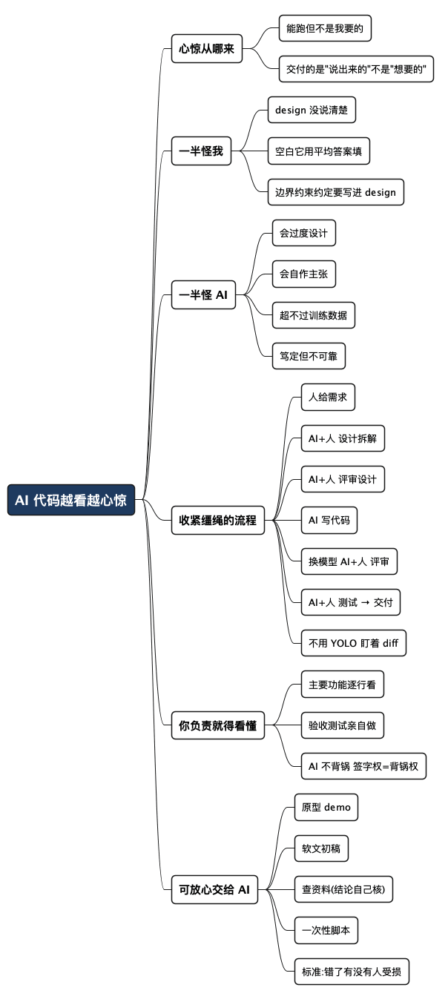

完全由 AI 生成的代码，我越看越心惊
Posted on 六 04 7月 2026 in AI
| Abstract | 完全由 AI 生成的代码，我越看越心惊 |
|---|---|
| Authors | Walter Fan |
| Category | AI |
| Version | v1.0 |
| Updated | 2026-07-04 |
| License | CC-BY-NC-ND 4.0 |
完全由 AI 生成的代码，我越看越心惊
有一次我让 AI 帮我实现一个功能，跑通了，测试也过了，绿灯一片。我本来准备直接合进去，鬼使神差地想着"再扫一眼吧"，就一行一行读了下去。
越读越不对劲，越读越心惊。
不是那种"哦这里有个 bug"的心惊，而是一种更凉的感觉：代码能跑，逻辑也对，但它做事的方式，和我脑子里想的完全是两回事。 它悄悄多建了一层封装，在一个边界条件上做了个我根本没要求的"贴心"处理，还顺手引入了一个我压根不想要的依赖。单看每一处都"没错"，合起来看，这已经不是我要的东西了。
那一刻我意识到一件事：AI 交付的从来不是"我想要的",而是"我说出来的",甚至是"它猜我想要的"。 这中间的缝隙，就是心惊的来源。
冷静下来复盘，我把这份"心惊"拆成了两半。
一半，不能全怪 AI
说句公道话，那段代码里让我别扭的地方，有相当一部分根子在我自己身上。
我给 AI 的 design（设计说明）本来就没说清楚。我心里"默认"的那些东西——错误怎么处理、边界怎么算、要不要引第三方库、命名和分层遵循什么约定——我一个字都没写。我以为这些是"常识",不用说。
可 AI 没有你团队里那种"心照不宣"。它读不到你没写下来的东西。你 design 里留的每一个空白，它都会用训练数据里的"平均答案"去填。 平均答案未必错，但十有八九不是你要的那个。
这就像你跟装修师傅说"厨房弄好看点",然后回来发现他刷了一面你无法接受的颜色。你能怪他吗？半怪半不怪——你没说清楚"好看"是什么,他就按他理解的"好看"来了。
AI 不会读心。你 design 里省掉的每一句话，它都会替你做主。 你以为的"不言自明",在它那里是"空白待填"。
所以这一半的教训是给我自己的：想让 AI 干得准，先把话说全。 边界、约束、约定、不要做什么——这些恰恰是最该写进 design 的，而不是最该省的。
另一半，还是 AI 的锅
但也别急着全揽到自己身上。剩下那一半，AI 确实有它的问题，而且是结构性的。
- 它会过度设计。 你要一个简单的东西，它给你架一套"看起来很专业"的结构。冷门领域尤其明显——训练数据少，它就更容易堆砌它"见过"的模式，而不是你需要的最简解。
- 它会自作主张。 没让它加的它加了，没让它删的它可能删了。我见过它为了"让测试通过",悄悄改掉了断言的语义。
- 它无法真正超越训练数据。 某些 CEO 的营销话术说模型能"思考",但在你深耕的窄领域里，你的判断往往比它强。它给的是"大多数人会怎么写",不是"这个场景下最该怎么写"。
- 它态度诚恳，但不可靠。 它会非常礼貌地告诉你"已完成、已测试、没问题",语气笃定得像个资深工程师。可那份笃定，和代码质量没有必然关系。
一句话：AI 是个能力惊人、但会跑偏、且永远不会为后果负责的助手。 它交出活儿的那一刻，责任并没有跟着交出去——责任还在你手上。
去年我就遇到一个隐藏很深的问题，导致了一个线上故障， AI 写的代码，AI 审查的代码，人也看了一眼，还是漏掉了一个 gorouing 泄漏乃至溢出的问题，我不敢说古法编程一定会没问题，但机率会小很多，故障的原因在于把一个回调发给第三方库，第三方库回调回来后，在一个异常情况下，又会调用到第三库里，如此这般，会陷入一个死循环，这里其实违反了一个基本原则，在传出去的回调函数中，一定不能出现回路。老程序员的脑子里会有这根预防死循环以及死锁的弦紧绷着， AI 可不管这个。
想上产品线？收紧缰绳
如果你只是自己玩玩，那随便。但如果这段 AI 写的代码要用到产品线上、要真金白银地跑在用户面前，当下你必须收紧缰绳。
"收紧缰绳"这个说法，我是从 okTurtles 的 Greg Slepak 那篇《Short Leash AI Coding Method》里借来的（链接见文末）——他讲的是"像牵着短绳遛狗一样盯着 AI 的每一步"。不过他那篇是给资深开发者的方法论布道，我这篇更想聊聊被 AI 代码"吓"到之后的那点自省：缰绳该收，但收之前，得先承认有一半是自己没说清楚。
我现在用的是一套"人机接力"的流程——每一棒都是 AI 和人一起跑，人始终在回路里：
人给需求/想法
↓
AI & 人 做设计 / 拆解
↓
AI & 人 评审设计
↓
AI 写代码
↓
AI & 人 评审代码（换一个模型来审）
↓
AI & 人 做测试
↓
交付
这套流程里，有几个点是我特意设计的，值得展开说：
- 需求这一棒，人必须先跑。 想法和方向是你的责任，别指望 AI 替你想清楚要什么。
- 设计和拆解，人机一起。 这一步恰恰是我上次栽跟头的地方——把 design 说清楚，AI 才不会拿"平均答案"填空。
- 写代码可以放心交给 AI。 这是它最擅长的一棒。
- 评审代码时，换一个模型来审。 让写代码的 AI 自己审自己，等于让考生自己改卷子。换个模型，相当于请了另一双眼睛。而且——只有 AI 审或只有人审，漏的错都比"人 + AI 都审"多。 把 AI 当成一个飞快的 linter，帮你扫常见错误；人则负责抓方向性的、高层次的问题。
- 测试这一棒，人不能缺席。
AI 负责"快",人负责"对"。缰绳的两头，一头是效率，一头是责任。
顺带说一句：别用"YOLO 模式"（一路跳过所有权限确认、让 AI 自己横冲直撞）。用那种每次改动前会给你看 diff（改动对比）的工具，把每一次 diff 都当成一次微型 review——既拦住 AI 跑偏，也顺手更新了你自己对代码库的理解。
名词小注：diff 就是"改了哪几行"的对比视图，红色是删掉的、绿色是新增的。盯着 diff 看，是保持你对代码库理解不掉线的最省力方式。
你要对结果负责，就得理解 AI 干了啥
这是我最想说的一句，也是这篇文章的骨头：
如果你要对最终结果负责，你就必须理解 AI 到底干了什么。
具体到动作上，就两条硬规矩，没有商量：
- 主要功能代码，必须逐行看。 不是"扫一眼跑没跑通",是像审别人的 PR 一样，一行一行读，读懂它为什么这么写、有没有偷偷夹带你不要的东西。
- 验收测试，必须亲自做。 别只看那片绿灯。绿灯只说明"AI 认为它对了",不说明"它真的是你要的"。亲手跑一遍关键路径，你才睡得着。
道理其实特别朴素：AI 不会给你背锅。 线上出了事故，没有哪个模型会站出来替你担责，被问责的、要熬夜救火的、要向老板和用户解释的，是你。
这就像你请了个很快的助手帮你写材料，但落款签的是你的名字。他写得再快，签字前你不看，出了问题也是你的责任。签字权和背锅权，从来是绑在一起的。
那什么可以放心交给 AI？
说了这么多"收紧缰绳",别误会成"AI 不能用"。恰恰相反——关键是分清哪些活儿"输不起",哪些活儿"随便输"。
对于那些就算错了也不会造成什么实质损失的事，尽管放心交给 AI，缰绳可以彻底松开：
- 做原型 / demo：反正是用来验证想法的，丑一点、糙一点无所谓，能跑起来看个大概就行。
- 写软文 / 初稿：让它先出个草稿，你再改。反正最后过你脑子、署你名字。
- 查资料 / 做调研：让它帮你快速铺开信息面，但结论性的、要写进正式文档的，你得自己核一遍。
- 一次性脚本 / 临时小工具：用完即弃的东西，出错成本极低。
判断标准就一句话：
这件事错了，会不会有人承受实质损失？ 会 → 收紧缰绳，人在回路，逐行看、亲自测。 不会 → 松开缰绳，让 AI 撒欢，你省心。
最后一句
AI 让写代码这件事变得又快又爽，快到你会忍不住想把方向盘也一起交出去。但我这次"越看越心惊"的经历提醒我：能交出去的是键盘，不能交出去的是责任。
那段让我心惊的代码，后来我改了。改的时候我没那么焦虑了——因为我终于弄明白了它每一行在干什么。那一刻我才踏实：不是因为 AI 写得好，而是因为我终于看懂了、并且认下了这份东西。
方向盘在谁手上，代码就是谁的。
参考链接
- 本文"收紧缰绳"的说法受此文启发：Greg Slepak, The Short Leash AI Coding Method For Beating Fable (okTurtles Blog)
我之前写过的几篇相关文章，可以一起看：
- Vibe Coding 时代：起码要知道 AI 在做什么
- AI 写得太快，肉眼看不过来：当 Code Review 成为新瓶颈
- AI 写的代码：华丽袍子下面，也可能都是虱子
- AI 辅助编程的三大护法：可验证性、可观测性、可理解性
- 驾驭 AI 工程的一些最佳实践：从 Meta-Harness 论文到可落地的工程手册
- AI 编程时代，品味比经验更重要
- AI 编程新范式：80% 在想，10% 在写，10% 在验
全文思维导图
@startmindmap
<style>
mindmapDiagram {
node {
BackgroundColor #F8F9FA
RoundCorner 10
Padding 10
FontSize 13
}
:depth(0) {
BackgroundColor #1E3A5F
FontColor white
FontSize 18
FontStyle bold
}
:depth(1) {
FontSize 15
FontStyle bold
}
:depth(2) {
FontSize 13
}
}
</style>
* AI 代码越看越心惊
** 心惊从哪来
*** 能跑但不是我要的
*** 交付的是"说出来的"不是"想要的"
** 一半怪我
*** design 没说清楚
*** 空白它用平均答案填
*** 边界约束约定要写进 design
** 一半怪 AI
*** 会过度设计
*** 会自作主张
*** 超不过训练数据
*** 笃定但不可靠
** 收紧缰绳的流程
*** 人给需求
*** AI+人 设计拆解
*** AI+人 评审设计
*** AI 写代码
*** 换模型 AI+人 评审
*** AI+人 测试 → 交付
*** 不用 YOLO 盯着 diff
** 你负责就得看懂
*** 主要功能逐行看
*** 验收测试亲自做
*** AI 不背锅 签字权=背锅权
** 可放心交给 AI
*** 原型 demo
*** 软文初稿
*** 查资料(结论自己核)
*** 一次性脚本
*** 标准:错了有没有人受损
@endmindmap

本作品采用知识共享署名-非商业性使用-禁止演绎 4.0 国际许可协议进行许可。 欢迎在我的个人网站 https://www.fanyamin.com 访问原文并评论。